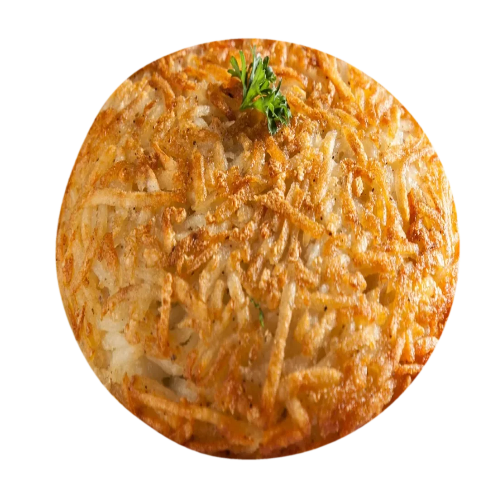
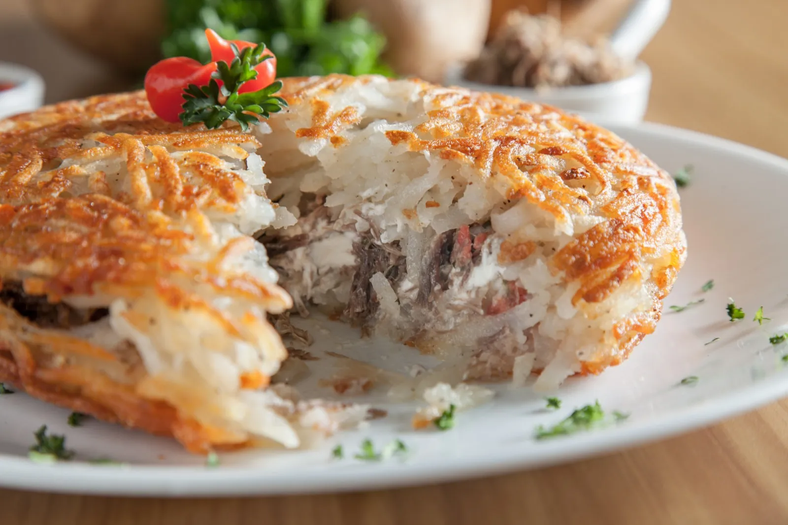
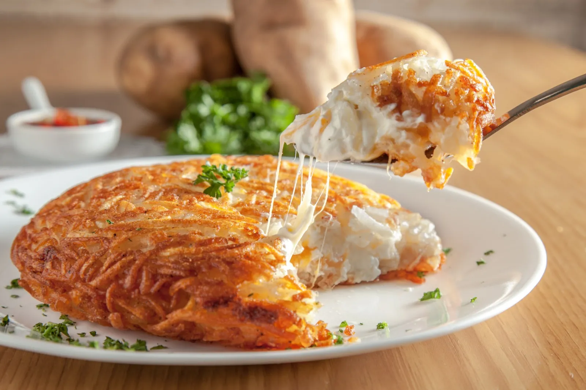
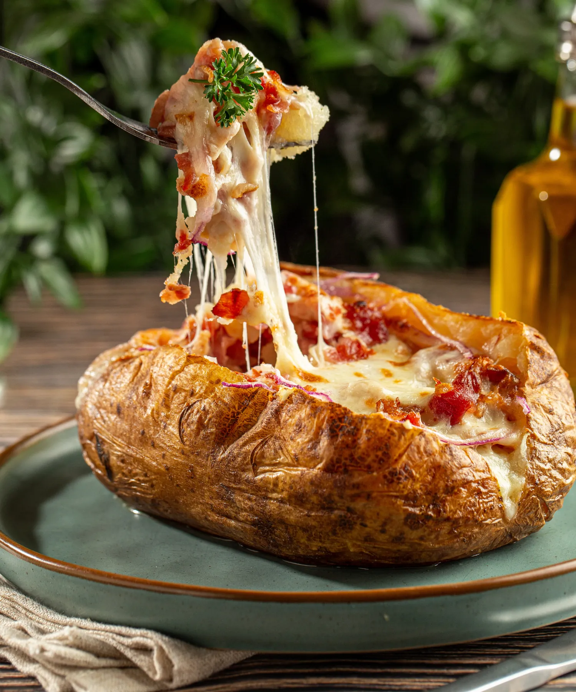
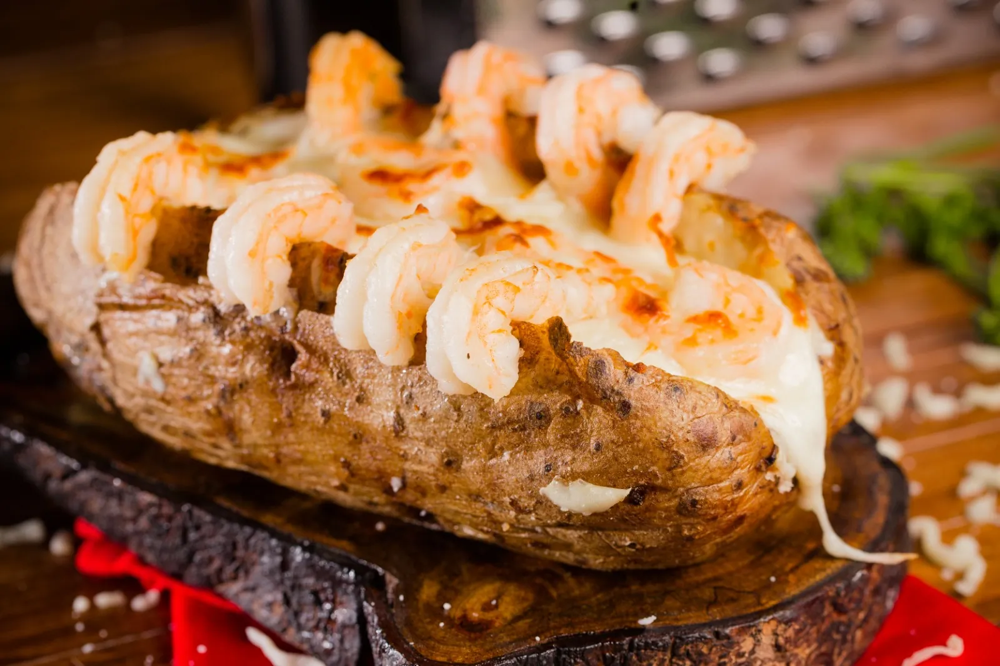
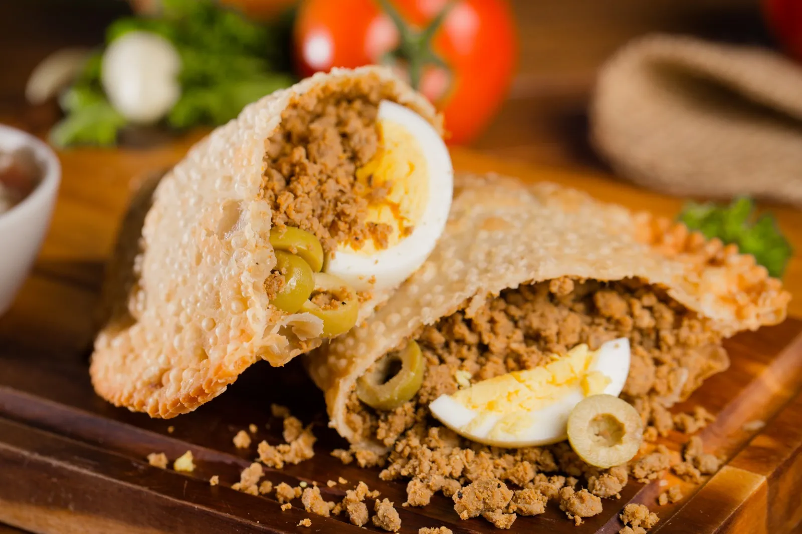
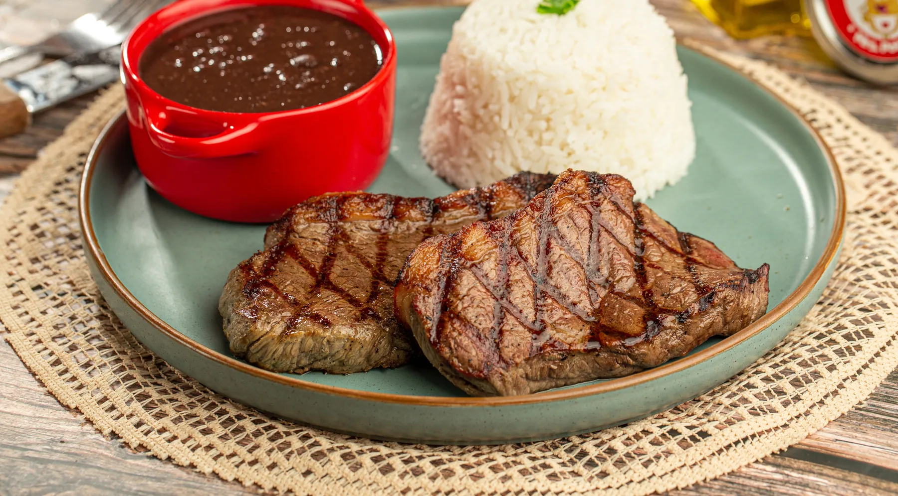
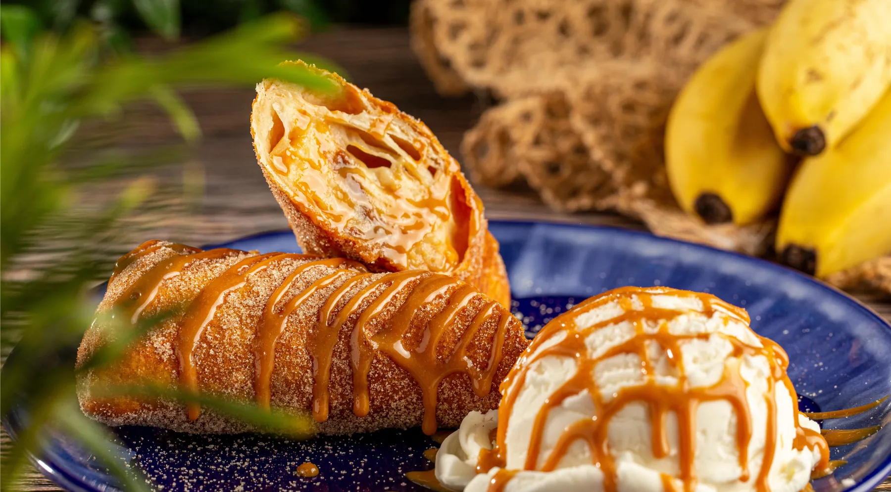
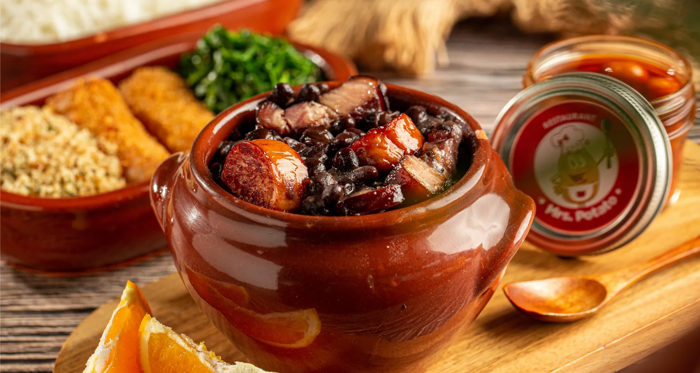
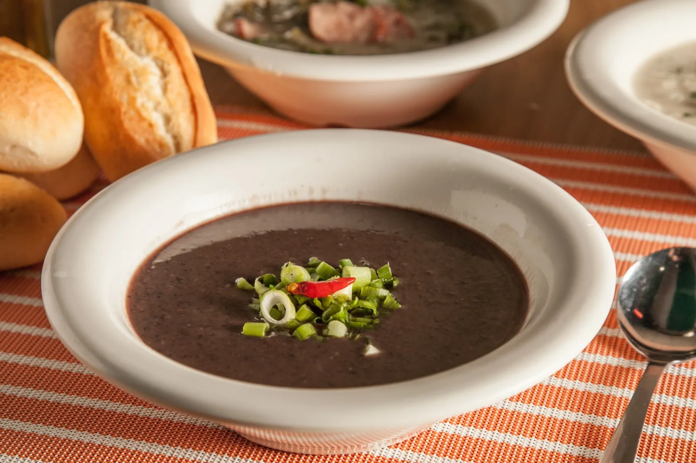

Como Guy Fieri a chamou
The Potato Institute

Comida brasileira de conforto em torno da batata, na S. Kirkman Road.
Anatomia de uma rosti.
- A crosta
Batata ralada, dourada na chapa. É o que você escuta primeiro.
- O miolo
Batata macia, fumegante, segurando o recheio no lugar.
- O recheio
Farto e generoso. Feito na hora, então chega derretendo.
- O puxa-puxa
A prova revisada por pares de que deu certo.


O Laboratório de Recheios.
Toda combinação aqui é um prato de verdade, com o preço da listagem. Escolha o formato, o recheio e faça o pedido.
Role devagar. Estica.

Escolha um departamento.
Rosti
Crocante por fora, recheada por dentro. Dez recheios.
$20,06 – $23,60Assadas
Batatas Idaho gigantes. Doze jeitos de rechear.
$18,88 – $23,60
Pastel
Cheio de bolhas, crocante, some em quatro mordidas.
$5,90 – $8,26
Pratos
Picanha, bobó de camarão, parmegiana. O Brasil na mesa.
$9,44 – $35,40
Sobremesas
Pudim, churros e um rolinho de banana que vale nota extra.
$4,72 – $18,88

A feijoada tem calendário próprio.
Só sábado e domingo. Individual $30,68, para dois $56,64, família para 4 a 6 $122,72.
Ver a feijoada"When is cold, remember to try our soups."
-- agora em Orlando
As quatro sopas do dia
Mrs.
A chef era ela. A dona era ela. Então: Mrs.
Rafaela Cabede saiu do Brasil, se apaixonou por restaurantes numa cozinha italiana e, em 2014, abriu um pequeno quiosque na International Drive. A ideia: pratos brasileiros, comida de rua e as casas de batata de casa, tudo sob o mesmo teto.
Ler a história completaO que você deve pedir?
"Guy Fieri was right...give me 10 to go!!!"Robin, cliente no OpenTable
A aula começa às 11h.
4550 S. Kirkman Road, Orlando, FL 32811 · (407) 290-0991